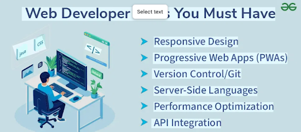
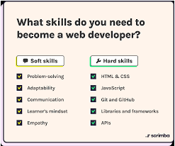
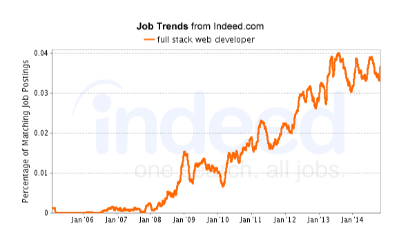

Data collection
Web developers job description:
A Website Developer is responsible for using their knowledge of programming languages to code websites and web applications. Their duties include communicating with clients to determine their needs and design preferences, creating code for the front and back-end of a website and running tests to ensure that they used the correct code strings.Skill and experience:
A website or application that functions flawlessly is the result of hours of programming, and more hours of testing and debugging. If you work as a web developer, you can expect to spend a good portion of your time doing this. Also Web developers need to have a thorough understanding of HTML programming. Many employers also want developers to understand other programming languages
Requirements:
Web development education ranges from self-taught skills and boot camps to bachelor's degrees in computer science, software engineering, or IT . While a degree is not always required, 71% of developers hold a bachelor's degree, with key skills including HTML, CSS, JavaScript, SQL, and Git. A strong portfolio demonstrating practical experience is often as important as formal education
Salary:
A web developer's Entry level salary (0-2 years) is about $82,236, which is $33.35 an hour. A Mid-Level Web developers salary (2-5 years) is $90,000-$130,000, which is around $43.37-$62.60 an hour. And a Senior level developers salary (5-10+ years) is $135,000+, which is about $64.90+ an hourTrends:
The long-running divide between utility-first styling and traditional CSS is narrowing, and modern native CSS features are a big reason why.Utility classes popularized fast, consistent styling and tight feedback loops. They made design systems easier to enforce and reduced the need for large, handcrafted stylesheets. At the same time, native CSS kept evolving. Features like container queries, cascade layers, custom properties, and modern color functions made CSS far more expressive than it used to be.
Whats emerging is a hybrid approach. Utilities are still used for layout, spacing, and common patterns, but they increasingly sit on top of native CSS primitives rather than replacing them. Design tokens are now expressed as CSS variables. Variants and themes are handled with layers and selectors instead of build-time processing magic. Components rely more on the cascade again, but in a controlled, predictable way.
